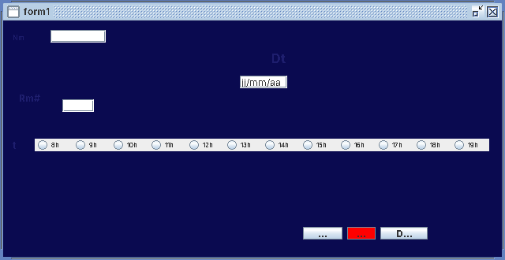
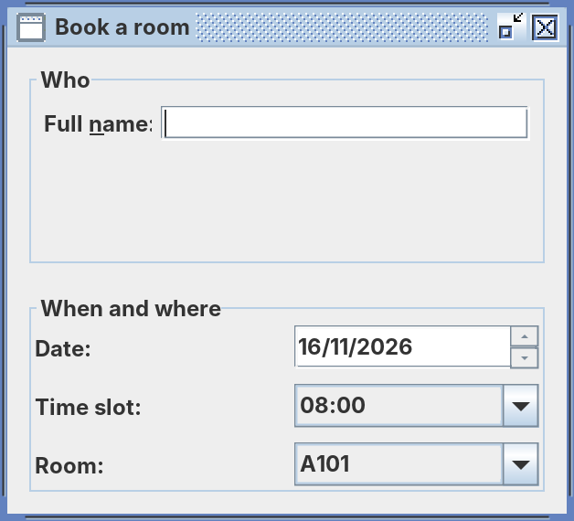
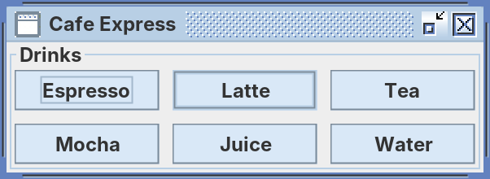
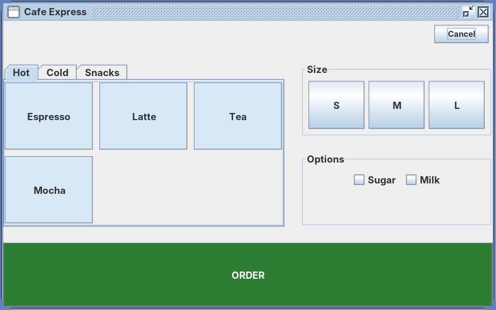
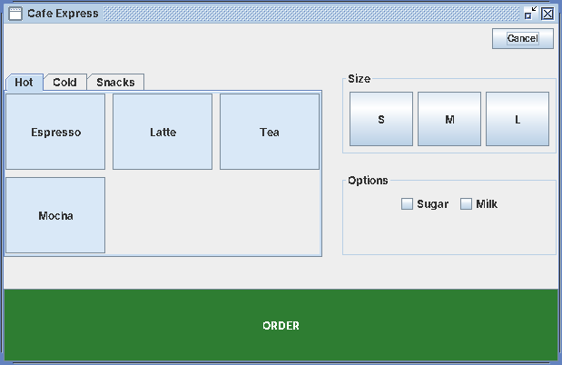

Université d'Alger 1 – Benyoucef Benkhedda
Faculty of Sciences · Computer Science Department
- Module
- Human-Computer Interaction (HCI)
- Level
- L3 – Semester 5 (ISIL, SI)
- Instructor
- Dr. Izountar Yousra
- Academic year
- 2026 / 2027
- Lab
- Lab 2.2 – Ergonomic Audit and Design Principles
- Duration
- 90 min
- Tools
- Java 21 (JDK) · VS Code · Swing
- Prerequisite
- Lab 2.1 (project TpSwing2 created)
Ergonomic Audit and Design Principles
Audit a faulty interface, correct it, then apply the principles of similarity, proximity, Fitts's law, Hick's law and the 2-second rule on a coffee kiosk.
For each step you have the real interface to build and the code, given stage by stage (it cannot be copied: type it yourself). After each stage you run the program and compare your window with the picture. Click any line of code to see what it does.
Objectives
- Audit an interface and identify its ergonomic errors, naming the principle or heuristic each one violates.
- Correct an interface: no absolute positioning, grouped fields, readable labels, big buttons, default button, confirmation and clear messages.
- Apply similarity, proximity, Fitts's law and Hick's law to design a kiosk screen.
- Give visible feedback during a wait with
JProgressBarandjavax.swing.Timer(2-second rule).
Session plan
| Part | Time |
|---|---|
| 2. Exercise 2: Detect and correct ergonomic errors | 50 min |
| 3. Exercise 3: Coffee kiosk (design principles) | 40 min |
| 4. Going further (To Do at Home) | at home |
| Total | 90 min |
Help guide help to work without problems
Read this page before starting and come back to it as soon as something does not work. Most problems of this lab are listed here.
1 · Before you start: checklist
- Lab 2.1 done: project
TpSwing2works. - Know how to take a screenshot: Win+Shift+S (Windows), Shift+Cmd+4 (macOS), PrtSc (Ubuntu).
- Have a drawing tool to annotate it (Paint, Preview…).
2 · Quick reference for this lab
| Item | What it does |
|---|---|
| Audit table | Work row by row: the hint tells which part of the code to read; then write the error, the concept it violates, and the fix. |
BorderFactory.createTitledBorder("Who") | Frame with a title to group fields. |
JSpinner.DateEditor(spinner, "dd/MM/yyyy") | Formatted date editor; needs a SpinnerDateModel. |
getRootPane().setDefaultButton(b) | Enter triggers b. |
b.setMnemonic('B') | Alt+B triggers the button. |
JOptionPane.showConfirmDialog(...) | Returns JOptionPane.YES_OPTION if the user confirms. |
dispose() | Closes only this window (unlike System.exit). |
javax.swing.Timer(ms, listener) | Runs code after a delay without freezing the window. |
JProgressBar | setValue(n), setIndeterminate(true) to show that something is in progress. |
3 · Common problems and how to fix them
| Symptom or message | Cause | Fix |
|---|---|---|
reference to Timer is ambiguous | Both java.util.Timer and javax.swing.Timer are imported. | Write new javax.swing.Timer(...) or import only the Swing one. |
| The window freezes during the waiting | Thread.sleep blocks the interface thread. | Use a javax.swing.Timer and update the progress bar in its listener. |
| Enter does not trigger Book | The default button was not set. | getRootPane().setDefaultButton(save) after creating the button. |
ClassCastException with the date editor | The spinner does not use a date model. | new JSpinner(new SpinnerDateModel()) before setEditor. |
| The corrected window is cut | setSize too small or components too big for it. | Call pack() after adding everything. |
RoomBooking does not compile after you changed it | You modified the colleague's code (it must stay unchanged). | Copy it again from the step and keep your corrections in RoomBookingFixed. |
'javac' is not recognized / command not found | A JRE (no compiler) is installed, or the terminal was opened before the installation (PATH not updated). | Install the JDK (Temurin 21), close and reopen the terminal, check javac -version. |
class X is public, should be declared in a file named X.java | The class name and the file name are different (case matters). | Rename the file or the class so that they are identical: RoomBooking ↔ RoomBooking.java. |
cannot find symbol on JFrame, JButton, Color… | Missing import or typo (Java is case sensitive). | Add import javax.swing.*; and import java.awt.*; (and java.awt.event.* if needed) at the top of the file. |
| Red underlines everywhere, Run button missing | VS Code did not open a Java project (you opened a single file) or the Java extension is still loading. | File → Open Folder on the project folder, wait for the loading indicator to end, restart VS Code if needed. The Run link appears above main. |
| The program runs but no window appears | setVisible(true) is missing, or an exception stopped the program before. | Call setVisible(true) at the end (in main) and read the red text in the terminal. |
| The window closes but the program keeps running | The close operation is not defined. | setDefaultCloseOperation(JFrame.EXIT_ON_CLOSE); — or press the red square in VS Code to stop it. |
HeadlessException | The program runs on a machine without a screen (remote SSH, Linux without a graphical session). | Run it on your own computer with a display. |
| A component is invisible | add(...) forgotten, added to another panel, or no size when the layout is null. | Check that every component is added to the right container; avoid null layout. |
4 · Tips and working method
- Run the original
RoomBookingand use it like a real user before looking at the code: click everything, press Enter, Tab, Cancel. - Number the errors in the table in the same order as the numbers on your screenshot.
- Each concept must be different in spirit from the others: do not write ‘ergonomics’; name the principle (contrast, Fitts, Hick, error prevention…).
- In
RoomBookingFixed, check the list of corrections of your table one by one before finishing. - If you are stuck for more than 5 minutes: re-read the step, compare with the mockup, search the error message, then ask your instructor with the exact error message and your code.
5 · What to hand in
- Your .java file(s) of the lab, with the class names given in the steps.
- A screenshot of each running window, when a step asks for it.
- Send them the way your instructor asks (file names with your name and group).
- Before sending: close VS Code, reopen your project and run it once more: it must work from scratch.
2. Exercise 2: Detect and correct ergonomic errors ⏱ 50 min
2.1Detect the ergonomic errors
⏱ 20 min
Detect the ergonomic errors
⏱ 20 minContext: a colleague wrote the room-booking window below: one single interface that contains all the errors. It compiles and runs, but its ergonomics are poor. Copy the code into RoomBooking.java, run it, and audit it. Fill in the audit table under the code: for each error give (1) what is wrong, (2) the concept (principle or heuristic) it violates, (3) your correction.
Send a screenshot of the running window with your numbered annotations (circles or arrows) and your completed table (the Copy table button turns it into a comment block to paste at the top of your source file).
Guidelines
- Step 1 · Create
RoomBooking.java, copy the code above without changing it, run it. Take the time to use the window like a real user: type a name, press Enter, press Tab, click Cancel, click Delete all, click Go with an empty name. - Step 2 · Look at the code family by family: (a)
setBackground/setForeground(colours); (b)setFont(font and size); (c) the texts of labels, buttons and messages; (d) all thesetBoundsnumbers (alignment, spacing, size of targets); (e) the order and colours of the three buttons; (f) the action of each button; (g) the date field and the 12 radio buttons. - Step 3 · Annotate the screenshot: circle each problem on the running window and write the same number next to it (1, 2, 3 …) with Win+Shift+S then a drawing tool (Paint, Snip & Sketch, Preview).
- Step 4 · Fill the audit table below the code: one row per error, in the order of the hints. Choose the concept in the list, write the fix in your own words. At least 8 rows, each a different kind of problem.
- Step 5 · The code must stay the same as the colleague's. Send the annotated screenshot and your table (or the file with the table as a comment block).
- Before you submit: each error has its principle (contrast, consistency, similarity, proximity, Fitts, Hick, error prevention, clear message, feedback, user control, keyboard) and a concrete fix; the numbers on the screenshot match the numbers of the table.

RoomBooking.java 2.2Correct the interface
⏱ 30 min
Correct the interface
⏱ 30 minWrite the corrected class RoomBookingFixed. It must fix all the corrections of your audit table (step 2.1): no absolute positioning, readable labels, grouped fields, a JComboBox instead of 12 radio buttons, a date editor, big buttons in a logical order, a default button, confirmation before a destructive action and clear messages.
Guidelines
- Step 1 · Create
RoomBookingFixed.java(new class, do not editRoomBooking). Title:super("Book a room"). UsesetLayout(new BorderLayout(10, 10))and nosetLayout(null)and nosetBounds. - Step 2 · Fields as attributes:
name(JTextField(18)),date(JSpinner+SpinnerDateModel),slot(JComboBox08:00, 10:00, 14:00, 16:00),room(JComboBoxA101, A102, B201, B202). - Step 3 · Date:
date.setEditor(new JSpinner.DateEditor(date, "dd/MM/yyyy")); - Step 4 · Group Who: a panel with
BorderFactory.createTitledBorder("Who")and the label Full name: + the text field. Give the label a mnemonic:setDisplayedMnemonic('N')andsetLabelFor(name). - Step 5 · Group When and where: a panel with a
GridLayout(3, 2, 8, 8)and the titled border When and where: rows Date:, Time slot:, Room: (each label + its component). - Step 6 · Assemble: put both groups in a centre panel
GridLayout(2, 1, 0, 15)with an empty border, thenadd(center, BorderLayout.CENTER). - Step 7 · Buttons: Cancel then Book (main action last) in a
FlowLayout(FlowLayout.RIGHT)panel at SOUTH, bothsetPreferredSize(new Dimension(120, 40));getRootPane().setDefaultButton(save)so Enter books;save.setMnemonic('B'). - Step 8 · Behaviour: Book with an empty name → warning dialog that says what is missing (Please enter your full name.) and
name.requestFocus(); otherwise a message with the room, date and time slot. Cancel → confirmation Discard this booking? thendispose()only if YES (neverSystem.exit). - Step 9 · Comment in your code, near each fix, the row number of the audit table it corrects (minimum 3 comments).
- Before you submit: Tab moves through the fields in a logical order; Enter triggers Book; resize the window: nothing is cut or overlapping; text is readable (normal font size, dark text on light background).
Build this window in 3 stages. In each stage: type the green lines, run, and compare your window with the picture. Then go to the next stage.

RoomBookingFixed.java 3. Exercise 3: Coffee kiosk (design principles) ⏱ 40 min
3.1Coffee kiosk: similarity and proximity
⏱ 15 min
Coffee kiosk: similarity and proximity
⏱ 15 minSimilarity: elements with the same function look the same (all drink buttons share size and colour; the action button is clearly different). Proximity: related elements are close together and separated from other groups by larger gaps.
Guidelines
- Step 1 · Create
CoffeeKiosk.java(extends JFrame, titlesuper("Cafe Express")). You will evolve this same file in steps 3.1, 3.2 and 3.3: send its current version at each step. Layout:setLayout(new BorderLayout(20, 20)). - Step 2 · Drinks (similarity): a panel
GridLayout(0, 3, 8, 8)with the titled border Drinks and sixJButton: Espresso, Latte, Tea, Mocha, Juice, Water. All the same size and the same light-blue colour:setBackground(new Color(0xD9E8F7))(if the colour does not appear, also callsetOpaque(true)). Add it toBorderLayout.CENTER. - Step 3 · Size: a panel with the titled border Size and three identical
JToggleButtonS, M, L in oneButtonGroup. - Step 4 · Options: a panel with the titled border Options and two
JCheckBox: Sugar, Milk. - Step 5 · Right column (proximity): a panel
GridLayout(2, 1, 0, 20)containing Size then Options, added toBorderLayout.EAST. Small gaps inside a group (8 px), larger gaps between groups (20 px). - Step 6 · ORDER (the one that must look different): a button ORDER in
BorderLayout.SOUTH, green (new Color(0x2E7D32)), white bold text, clearly different from the drink buttons. - Step 7 · Comments: above each group, a comment saying which principle it applies:
// Similarity: .../// Proximity: .... Finish withpack()andsetLocationRelativeTo(null). - Before you submit: all six drink buttons are the same size; groups are visibly separated; ORDER is the only green element; clicking M then L selects only one size.
Build this window in 3 stages. In each stage: type the green lines, run, and compare your window with the picture. Then go to the next stage.

CoffeeKiosk.java 3.2Fitts's law and Hick's law
⏱ 15 min
Fitts's law and Hick's law
⏱ 15 minFitts's law: the time to reach a target grows with the distance and shrinks with the size (T = a + b·log₂(D/W + 1)). Make frequent targets big and put the main button on the screen edge. Hick's law: choice time grows with the number of options: split the 10 products into tabs of at most 6.
Guidelines
- Step 1 · Keep working in
CoffeeKiosk.java(copy your 3.1 file aside if you want to keep it). - Step 2 · Hick's law (fewer choices): replace the single drinks panel by
JTabbedPanewith three tabs: Hot (Espresso, Latte, Tea, Mocha), Cold (Iced coffee, Juice, Water), Snacks (Croissant, Cookie, Muffin). No tab has more than 6 items; the most popular drink (Espresso) comes first. Each tab content:GridLayout(0, 3, 8, 8). - Step 3 · Fitts's law (big targets): every drink button
setPreferredSize(new Dimension(110, 70)); size buttonsnew Dimension(70, 60). Nothing smaller than about 45×45 px. - Step 4 · ORDER on the edge: in
BorderLayout.SOUTH, full width,setPreferredSize(new Dimension(100, 80)). The screen edge cannot be overshot, so the target is very easy to hit. - Step 5 · Cancel: a small button Cancel (smaller font), right-aligned and separated from ORDER by a visible gap, so a tap on ORDER cannot hit it by accident.
- Step 6 · Comments: next to each choice, a comment with its argument:
// Fitts: ...or// Hick: ...(at least 3). - Before you submit: three tabs, none with more than 6 buttons; ORDER spans the bottom of the window; Cancel is small and far from ORDER.

CoffeeKiosk.java 3.3The 2-second rule: waiting feedback
⏱ 10 min
The 2-second rule: waiting feedback
⏱ 10 min2-second rule: an action must give visible feedback immediately (< 0.1 s) and the user must never wait more than about 2 s without an indicator of progress. Simulate a payment that takes 3 seconds when the user clicks ORDER.
Guidelines
- Step 1 · Keep
CoffeeKiosk.java. Add two attributes: aJProgressBar bar = new JProgressBar();hidden at start (bar.setVisible(false)) and aJLabelPayment in progress… hidden too. Put them in a panel above ORDER. - Step 2 · On click, immediately (feedback < 0.1 s):
order.setEnabled(false)(no double click),bar.setIndeterminate(true); bar.setVisible(true);show the label, andsetCursor(Cursor.getPredefinedCursor(Cursor.WAIT_CURSOR)); - Step 3 · Simulate the 3 s payment without freezing the window:
javax.swing.Timer t = new javax.swing.Timer(3000, ev -> { ... });thent.setRepeats(false); t.start();. Do not useThread.sleep(3000)in the listener: it blocks the Event Dispatch Thread, the bar would not even be drawn. - Step 4 · When the timer fires: hide the bar and the label,
order.setEnabled(true),setCursor(Cursor.getDefaultCursor()), thenJOptionPane.showMessageDialog(this, "Thank you! Your order is being prepared."). - Step 5 · Submission: send the complete class (3.1 + 3.2 + 3.3 together). Take the screenshot while the bar is shown (click ORDER, then capture within 3 s, or use a 3 s timer on your screenshot tool). Minimum 3 comments.
- Before you submit: after clicking ORDER the button is grey immediately; you can move the window while waiting (it is not frozen); after 3 s everything returns to normal.

CoffeeKiosk.java 4. Going further (To Do at Home) 🏠 at home
4.1Redesign your own screen (optional)
Redesign your own screen (optional)
Pick the interface you built in the first lab (or any application you use). In a comment block, list one example of each principle seen today: similarity, proximity, Fitts's law, Hick's law and the 2-second rule. For each one, say whether the interface respects it and how you would improve it.
Guidelines
- Step 1 · Open your interface from the first lab (or any application) and look at it as a user.
- Step 2 · In a comment block, write five lines, one per principle: similarity, proximity, Fitts's law, Hick's law, 2-second rule. For each: one example found in the interface, respected or not, and how you would improve it.
- Step 3 · If one is not respected, modify the code and compare before/after. No submission is required: this exercise prepares the next lesson.
Human-Computer Interaction · Université d'Alger 1 · Your “I'm done” ticks are saved in your browser only.